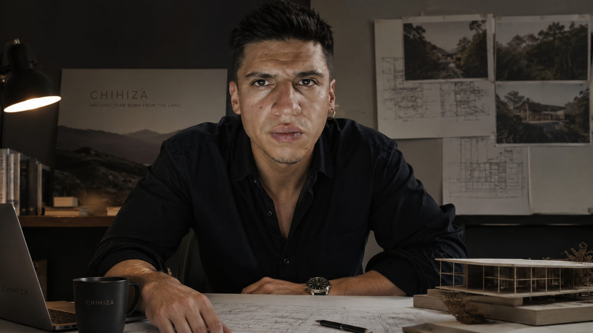

Architecture that honors the land. Research that proves it. A methodology that delivers it.
Most developers arrive at a piece of land with a plan already drawn. They flatten it, import materials from wherever is cheapest, and impose a design that could exist anywhere.
We believe this approach produces buildings that are expensive to maintain, disconnected from their environment, and hostile to the people who inhabit them.
CHIHIZA was founded to prove there is another way. An approach where the land speaks first. Where local materials — bamboo, stone, earth — are not compromises but advantages. Where architecture emerges from the territory rather than being imposed upon it.
We are architects, researchers, and builders. We don't just design buildings. We study the relationship between people, land, water, climate, and local materials — and then we translate that research into places that feel timeless, resilient, and deeply connected to their environment.
Not every site is suitable for what we do. Sometimes our recommendation is not to build. That honesty is part of our methodology.
Architect · Researcher · Strategist

Born in August 1994, Emiliano Pérez is a Colombian architect whose work is driven by a simple belief: the future of architecture lies in learning from nature rather than competing with it.
His professional journey has been shaped by a deep commitment to sustainable rural development, combining architecture, land planning, environmental stewardship, and long-term territorial vision. Over the years, he has explored how ecological design can generate not only beautiful places, but also lasting economic, social, and environmental value.
This vision led him to found CHIHIZA, a studio dedicated to creating ecological communities across Colombia. Through CHIHIZA, Emiliano brings together architecture, landscape, modular construction, and strategic land development into a single integrated methodology that seeks to honor the character of each place before a single line is drawn.
His work focuses on understanding the relationship between people, land, water, climate, and local materials. Rather than imposing architecture on the landscape, he believes every project should emerge naturally from it — creating spaces that feel timeless, resilient, and deeply connected to their environment.
Beyond design, Emiliano is passionate about helping international clients understand the realities of building and living in Colombia. His research into legal frameworks, sustainable development, and rural investment has inspired educational resources that encourage informed decisions based on transparency and long-term thinking.
"The best architecture is not the one that dominates the landscape, but the one that makes you feel it has always belonged there."
Architect · Ceramicist · Designer
Born in September 1994, María Cortés is a Colombian architect whose design philosophy is rooted in the belief that architecture should create harmony between people and the natural world. She sees every project as an opportunity to design spaces that inspire well-being, foster human connection, and respect the identity of the landscape.
As Co-Founder of CHIHIZA, María leads the studio's architectural design vision, translating ideas into places that are elegant, functional, and deeply connected to their environment. Her work is guided by simplicity, timeless design, and a careful understanding of light, materials, proportion, and the experience of living in nature.
Together with her husband and business partner, Emiliano Pérez, María has helped shape CHIHIZA into a studio dedicated to ecological architecture and sustainable rural development throughout Colombia. Their shared vision is founded on the belief that architecture should protect the character of a place rather than transform it beyond recognition.
Her approach combines contemporary architecture with local materials, traditional craftsmanship, and environmentally responsible design. Every project seeks to achieve a balance between aesthetics, functionality, and long-term sustainability, creating spaces that feel both refined and naturally integrated into the landscape.
"Architecture has the power to transform not only the landscape, but also the way we experience life within it."
Architect · Project Manager · Construction Economist
Julián David Pérez Pinilla is the operational backbone of CHIHIZA. An architect with a Master's in Project Management and a specialization in Property Appraisal, he brings the rigor that turns vision into built reality.
His dual expertise in traditional construction economics and social architecture makes him uniquely qualified to lead CHIHIZA's projects. His research on rammed earth construction valuation provides the financial framework for local material sourcing across all projects. His work on architecture for social resocialization demonstrates his belief that buildings must serve human dignity — not just function.
At CHIHIZA, Julián David manages the intersection of design, construction, and economics. He ensures every project is not only architecturally sound but financially viable — bridging the gap between ecological ambition and market reality.
His specialization in property appraisal means he understands what investors need: verifiable value, documented processes, and transparent financial structures. This is the foundation of trust between CHIHIZA and its partners.
Every CHIHIZA project is built on peer-reviewed research. Not opinions. Not trends. Evidence.
Architect & Project Manager
Whether you're a landowner, an investor, or an architect — we'd love to hear your vision.